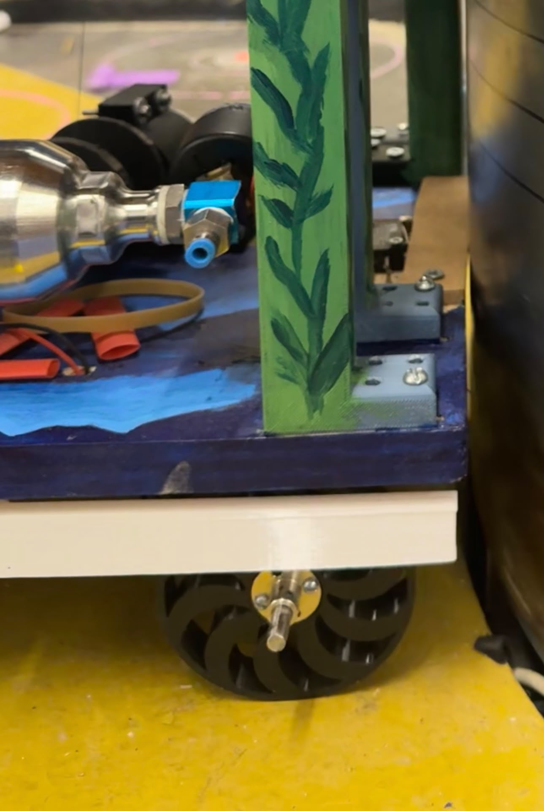
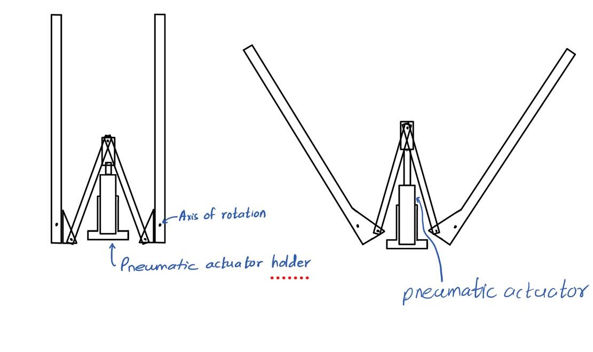
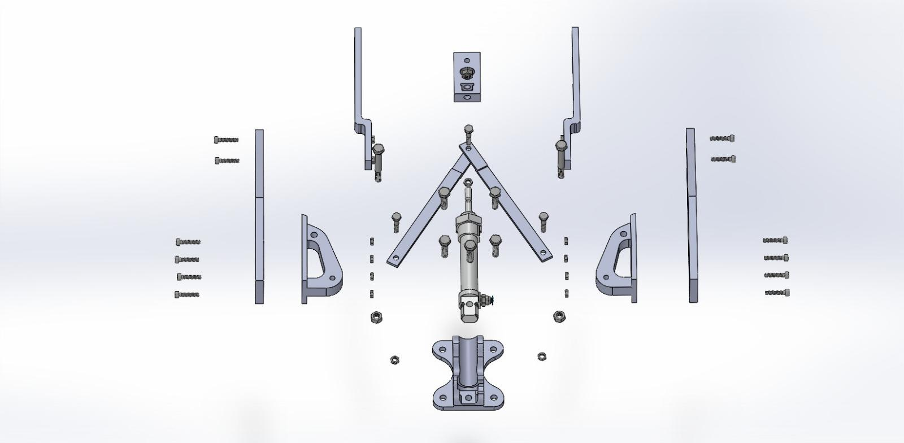
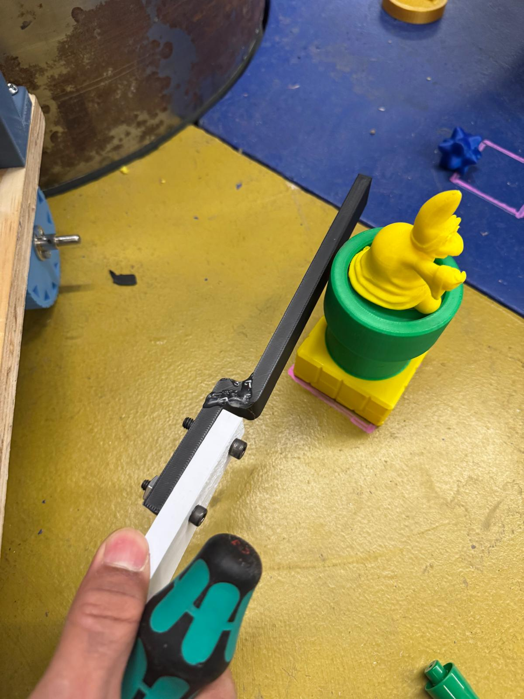

1. Leave the Launch Star
The Launch Star was the robot’s starting area. The robot had to activate when the match began and drive completely out of that area. Our drivetrain also carried the robot to the central reactor for the other tasks.
ME 2110 Competition Robot
Georgia Tech / ME 2110 / Spring 2026
Our four-person team built an autonomous robot to complete five tasks in 40 seconds on a $120 budget. I designed and built the drivetrain and Koopa-toppling mechanism.

For Georgia Tech’s ME 2110: Creative Decisions & Design, we designed, built, and tested a robot for a Super Mario Galaxy-themed competition. Four robots competed in each 40-second match. Once the match started, the robots had to run on their own without anyone controlling them.
We kept the five subsystems mostly independent so that a jam in one mechanism would not stop the others from scoring.
The Mario names referred to physical game pieces and scoring areas on the track. The Galaxy Reactor was the rotating structure in the center of the arena. Each task earned points, and our robot had a separate subsystem for each one.
The Launch Star was the robot’s starting area. The robot had to activate when the match began and drive completely out of that area. Our drivetrain also carried the robot to the central reactor for the other tasks.
Two Koopa figures stood in our part of the arena. Moving them earned points, but knocking them over earned more. Our pneumatic arms swung outward to topple them.
The robot had to collect coin and starbit game pieces from the central reactor and direct them into their respective scoring areas. Each area had an inner and outer ring, with more points for pieces in the inner ring. Our robot used ramps to sort and guide the pieces using gravity.
The robot carried four Luma payloads and had to place them into separate receptacles on the rotating reactor. Our mechanism used a pneumatic piston to push a payload into place as a receptacle came around.
The robot had to lift a Mario payload onto one of the reactor’s three tiers. Higher tiers earned more points. Our mechanism extended upward to reach the target and release Mario.
I was responsible for two of the five subsystems, from design and fabrication through testing and installation.
The drivetrain needed to reach the central reactor in under four seconds. We calculated a minimum wheel speed of about 5.5 rad/s; the robot used a 2:1 geared drivetrain.
The mounting hubs slipped on the axles because they were not properly tightened. Tightening them with the proper tools fixed this.
Separately, the wheels slipped against the track and struggled with bumps and gaps between track sections. I tested four wheel versions to improve grip and get over those joints:

I designed and built a mechanism that used a pneumatic piston and connecting links to swing upper and lower arms outward. The arms hit the Koopas around their middle and upper sections to knock them over. They fit underneath the robot base, alongside the drivetrain.


The mechanism succeeded close to 100% of the time in testing. The only failures were PLA arms breaking at low infill. After we switched to PETG+ with slightly higher infill, the arms did not break again.

The controller coordinated the drivetrain and scoring mechanisms. I mounted the reactor mechanism and helped refine the Mario mechanism by identifying an opportunity to use 3D-printed slides and reduce friction.
When the match began, the Arduino-based controller drove the robot to the central reactor. A limit switch at the base detected its arrival, then the pneumatic arms deployed to topple the Koopas. Another limit switch timed Luma placement as the reactor rotated.
The robot used two DC motors, pneumatic actuators, solenoids, limit switches, and an IR sensor. A raised platform left room for the electronics and air tank, with wiring routed away from moving parts.
Passive ramps used height differences to sort coins and starbits, then gravity to move them toward scoring areas. A calculated minimum ramp angle of about 32 degrees helped coins slide reliably without another actuator.
As the reactor rotated, its walls triggered a limit switch. This activated a pneumatic piston that pushed gravity-fed Luma payloads into the receptacles. My involvement was mainly securing this subsystem to the robot.
A telescoping mechanism lifted Mario using a motorized spool and string. I noticed that many teams with successful Mario mechanisms used 3D-printed slides. We had initially ruled out that approach because we expected the printed layer ridges to create excessive friction. Revisiting that assumption, we found that the mechanism’s steep mounting angle allowed the slides to move without significant resistance from the layer height. We then refined the print orientation so the sliding motion ran parallel to the layers, substantially reducing friction.
We organized the work into sprints: short periods focused on a specific goal, such as building or improving a subsystem, then testing it before the next review.
I helped document the robot’s requirements and subsystem functions. During testing, we recorded failures, likely causes, and changes to try in the next sprint.
Spring 2026 ME 2110 final competition.
Recognition for the team’s engineering design work.
This project taught me to pay as much attention to a wheel hub, a wire route, or a loading arrangement as to the main mechanism. Those details decided whether the robot could repeat a good run. I came away with a better sense of how to turn a promising design into hardware I could trust.